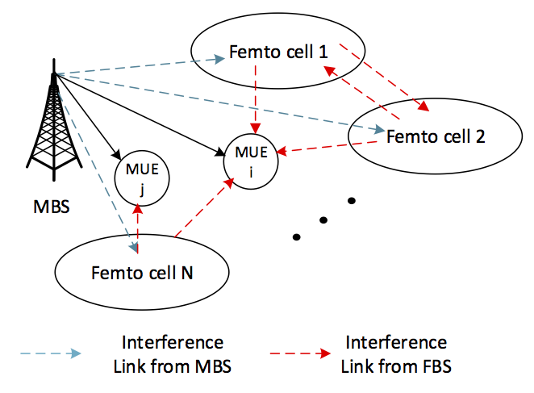

Research Projects
Outage Balancing for Femtocell Networks
Keywords: Non-convex Optimization, Mixed-Interger Programming Problem, Non-linear Perron-Frobenius Theorem, Heterogeneous Networks
 Given channel statistics information either locally at each femtocell base-station (FBS) or collected at some control node, we aim at optimizing certain system parameters based on the outage probability for FUEs and MUEs. In a two-tier heterogenous network, interference comes from both the intra-tier (femto-to-femto, macro-to-macro) and cross-tier (femto-to-macro, macro-to-femto). Based on similar model, we managed to solve the following two problems
- With resource allocation fixed, jointly optimize the rate allocation and power allocation for each link.
- With rate requirement fixed, jointly optimizing resource allocation and power allocation for each link.
Interference Mitigation with Queue Stability Consideration
Keywords: Lyapunov Optimization, Non-convex Optimization, Successive Convex Approximation.
We study the spectrum sharing in heterogeneous networks considering the queue-stability of the victim layer. Traditional resource scheduling baed on channel condition alone may lead to intolerable user backlogs and frequent package drops. Based on Lyapunov optimization, we designed algorithms to control the interfering tier power adaptively constrained on the queue-stability on the interfered users.
Game Theory and Its Applications
Keywords: Non-cooperative games, auction design, mechanism design, pricing.
Some optimization problems in wireless networks can be a natural application of non-cooperative games. By analyzing the convergence for non-cooperative game based algorithms in tiered networks, we can gain insight into when we can adopt non-cooperative mechanisms for sharing communication nodes and when we should use orthogonal resources.
Another important application of algorithmic game theory is mechanism design in areas like spectrum trading, where the spectrum acts as a commodity that can be sold to customers (in our case, customers can be user equipments, base-stations, or both). More generally, power or backhaul bandwidth can also be viewed as a valuable resource for trading.
Intern Projects
Improving Spectral Efficiency for ad hoc Networks
Keywords: MIMO, ad hoc networks, link adaptation, joint transceiver design, successive interference cancellation
The projects aim at improving the spectral efficiency of ad hoc networks using multiple MIMO techniques. By striking a balance among several trade-offs for different techniques, such as power control, beamforming/precoding, interference cancellation, link adaptation, spectrum division, etc. simulations have shown more than 50 times gain in terms of spectral efficiency compared with the baseline.
Processing Field Data for Power Saving Projection of WCDMA+
Keywords: Perl, script, Data Cleanup, Regular Expression.
Processed raw data to project the percentage of power saving for early decoding in WCDMA+.
Searcher Algorithm Enhancement with Intermittent Scheduling
Keywords: C++, AGC, WCDMA
AGC(Automatic Gain Controller) output may suffer from intermittent up-shooting or down-shooting due to its transient response during intermittent HSPA scheduling in WCDMA systems. Algorithm is designed and simulated in C++ to adaptively compensate the spikes. Performance shows that the proposed scheme can significantly improve searcher performance in terms of false alarm rate while not decreasing the detection rate.
Adaptive Taylor Approximation Algorithm for UERS Channel Estimation and Interference Cancellation
Keywords: LTE, UERS, Interference Cancellation, Channel Estimation, Taylor Approximation
Perform optimization and generate LUT for online parameter basis selection and achieve significantly improvement in terms of MSE (up to 7 dB) compared with existing algorithm.
Course Projects
Simulation Biham-Middleton-Levine (BML) Traffic Model in R
Keywords: R, R package, Data Visualization
As a homework project for an audited statistic programming course (STAT242),
the simulation is about cars moving on a grid
. As required in the description of the project, we populate the grid by placing cars into a r x c grid.
It has been found by Bihan et el that the steady-state flow of traffic suddenly went from smooth flow to a complete jam.
The project aims to practicing writing R packages, vectorized operations in R and S3 methods.
See the link for generated animations.